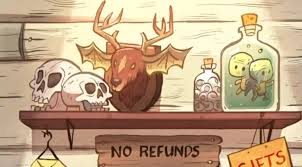

Nous avons misé sur le plaisir dans l'absence de remboursements
Le Mystery Shack est un musée du surnaturel, de l'étrange, de l'incongru, et surtout, de l'authentique! Situé dans le beau milieu de nulle part (plus précisément: Gravity Falls, Oregon), cette attraction touristique sans égal vous fera douter de tout ce que vous pensiez savoir sur les lois de la nature. Surtout, ne manquez pas notre magasin de souvenirs! Mais faites bien attention: certains articles pourraient vous coûter plus cher que vous ne le croyez... Ce qui nous amène à notre slogan: On met la "joie" dans "aucun remboursement"! (Ce jeu de mots fonctionne mieux en anglais)
